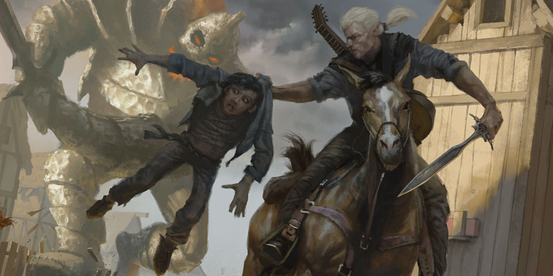

Bounded Accuracy
D&D 5 a mis en lumière le concept (ce n'est pas une règle) de Bounded Accuracy. « Accuracy » pour déterminer la difficulté de faire quelque chose, et « Bounded » pour signifier qu'il y a des limites. En quelques mots, cela consiste à limiter les bonus au fil des niveaux.
Les limites
Voici brièvement les limites supérieures que fixe D&D 5 :
- Valeur de caractéristique : 20
- Classe d'armure des créatures : 25 (CA de la tarasque)
- Degré de Difficulté : 30
- Bonus d'un PJ niv 1 : +5 (+3 de bonus de caractéristique et +2 de bonus de maîtrise)
- Bonus d'un PJ niv 20 : +11 (+5 de bonus de caractéristique et +6 de bonus de maîtrise)
La difficulté
On déduit des limites qu'un PNJ sans aucun bonus peut tenter une tache Difficile (DD 20). Un personnage niveau 1 peut réaliser une tache Très difficile (DD 25) et un personnage niveau 20 pourra pour sa part réussir une tache Quasi impossible (DD 30), mais uniquement dans leurs domaines de prédilections. Les objets magiques ont un bonus de +1 à +3, mais les personnages auront rarement un bonus supérieur à +1, donc l'apport de la magie est minime et peut d'ores et déjà être ignoré.
Tout PJ peut par conséquence tenter une tache Très difficile. La réussir sera bien entendu plus ou moins facile selon les cas, mais toujours possible, et sans avoir besoin de magie. À D&D 5 le MD n'a donc plus besoin d'adapter spécifiquement les DD aux niveaux des personnages. Les DD représentent une valeur de difficulté fixe pour une tache donnée, et non plus une difficulté que le MD doit faire varier en fonction du niveau des personnages.
Bounded Accuracy
L'intérêt de la Bounded Accuracy n'est pas intrinsèque ; ce concept n'a de sens que si l'on compare D&D 5 avec les éditions précédentes. Et cela devient évident si l'on remarque qu'avec la dernière édition un personnage niveau 1 avec un 20 au jet d'attaque et un bonus de +5 est capable de toucher la CA 25 d'une tarasque, alors qu'à D&D 3 la tarasque avait une CA de 35 et était de fait intouchable pour un PJ de ce niveau.
En effet, auparavant, le bonus au jet d'attaque et la classe d'armure des personnages augmentaient pratiquement à chaque niveau. Il fallait donc que les attaques et les défenses des créatures fassent de même. Conséquence : des créatures faibles n'avaient aucune chance de toucher des personnages de haut niveau, et inversement. En soit il n'est pas anormal que des créatures puissantes ne puissent être terrassées que par des personnages également puissants. Mais cela donnait aussi lieu au fait qu'à partir d'un certain niveau, une horde d'orcs par exemple ne constituait plus aucune menace pour un PJ, car ceux-ci n'avaient plus aucune chance de toucher la CA d'un personnage de haut niveau.
D&D 5 a changé la donne. Si avant on augmentait la difficulté en diminuant la probabilité pour une créature d'être touchée, maintenant on augmente principalement ses points de vie. Et lorsque qu'un personnage monte en niveaux, on augmente bien un petit peu sa probabilité de toucher (son bonus de maîtrise), mais surtout on augmente les dégâts qu'il peut infliger et les coups qu'il peut encaisser (ses points de vie). Ainsi les orcs peuvent rester une menace durant toute la vie d'un aventurier. Il suffit simplement d'augmenter leur nombre lors des rencontres.
Du coup, les personnages n'affrontent plus certaines créatures parce qu'ils peuvent enfin les toucher, mais simplement parce qu'ils sont enfin capables de lui infliger un montant significatif de dégâts. Et cela conduit alors au principal intérêt de la Bounded Accuracy selon moi : dans un groupe, même disparate en termes de niveau, tout le monde peut participer, et on évite ainsi le personnage qui durant un combat est absolument incapable de porter le moindre coup efficace à l'adversaire. Certains feront peut-être plus de dégâts que d'autres, mais tous participeront.

Par blueace